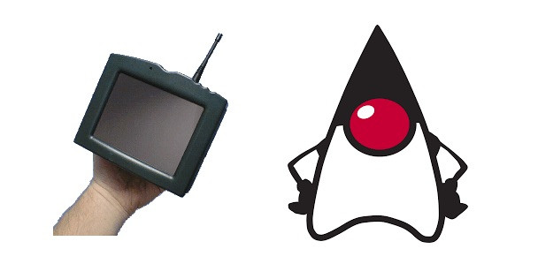

Статья написана:
Java
В 1991-м Sun Microsystems
затеяли так называемый Green Project
, определивший дальнейшую судьбу Гослинга. Интересно, что задумка этого проекта довольно точно предсказала будущее, но сам проект дал человечеству совершенно не то, что от него ожидалось.
Сегодня, если спросить случайного айтишника про Java, он может сказать «это язык, популярный в бэкенде веб-сервисов». А на старте Green Project
никто не думал в таких категориях: современных веб-сервисов не существовало, а создавать язык программирования там вообще не собирались.
Что же собирались сделать? Предвосхитить «следующую волну компьютеризации». В Sun
предположили, что вслед за взлётом ПК придут новые «умные» потребительские устройства (от телевизоров до микроволновок), и захотели первыми занять какую-то нишу на этом рынке. Полной определённости «какую именно» не было, компанию интересовали и железо, и софт.
Когда пытаешься опередить прогресс и строгие ТЗ невозможны, требуется работа не в корпоративном духе, а в исследовательско-стартаперском. И Green Project
, по сути, сделали самостоятельным стартапом. Для него сняли отдельный офис, посадили всю команду из 13 человек туда, дали ей время и бюджет, а коммуникацию между ней и основным офисом минимизировали. То есть у команды было много самостоятельности, но это были не просто теоретические исследования: за отведённое время она должна была сделать что-то такое, на чём Sun дальше сможет зарабатывать.
В Green Project
делали одновременно и собственный железный прототип нового устройства, и операционную систему для него GreenOS
. А вот новый язык для приложений изначально создавать даже не планировали, вместо этого Гослинг собирался выбрать подходящий.
Сначала он попытался модифицировать под нужды проекта компилятор C++ (называя эту затею «C++ ++ --»: возьмём С++, что-то добавим, а что-то уберём). Но затем пришёл к выводу, что даже измененённый С++ не подходит, и нужен по-настоящему новый язык. Было несколько разных соображений: в частности, хотелось добиться максимальной независимости от железа (ведь различные «умные устройства будущего» могли быть самыми разными), а сборку мусора автоматизировать.
Гослинг принялся за создание подходящего языка — и поначалу назвал его Oak попросту из-за того, что за его офисным окном рос дуб. Он вспомнил то, что ему было известно о UCSD Pascal
(тоже довольно независимом от железа языке), а также пообщался с людьми, занимавшимися виртуальной машиной Smalltalk — и вдохновился этим опытом. Тем временем в проекте по-прежнему воспринимали этот язык лишь как вспомогательный инструмент, а не как масштабный самодостаточный продукт. Так что большой команды у Гослинга не появилось, он сам занимался и дизайном языка, и компилятором, и виртуальной машиной.
Спустя полтора года работы, осенью 1992-го, у группы было готово устройство-прототип "Star7" и софт для него. Это было нечто вроде пятидюймового КПК — страшно отличающегося от современных устройств, но уже с цветным тачскрином! На этом экране для примера надо было показать что-то яркое, и так возник мультяшный персонаж Дюк, ставший впоследствии маскотом Java.

Примерно в одно время с переименованием произошла и масштабная смена курса. В 1993-м появился популярный браузер Mosaic — и спустя год стало ясно, что веб растёт гигантскими темпами. Пользователей становилось всё больше, и им хотелось уже не только передачи текста, но и чего-то сложнее. При этом у разных пользователей могли быть очень разные компьютеры. И тут внезапно оказался очень уместен язык со слоганом «Write Once Run Anywhere», изначально поставивший себе цель отвязаться от железа.
В сентябре 1994-м в Sun прошла внутренняя демонстрация собственного браузера: он мог получать по сети специальные фрагменты Java-кода (апплеты) и исполнять их. Среди тех, кто оценивал разработку, был Эрик Шмидт (на тот момент CTO Sun, позднее — СЕО Google). В компании решили действительно сделать ставку на апплеты. И на SunWorld '95 представили два продукта: Java 1.0 и браузер HotJava
Этот прототип впечатлил в Sun значимых людей вроде Билла Джоя (если имя кажется вам смутно знакомым, вы можете знать его как автора редактора vi, из которого вырос vim). Но он был скорее демонстрацией наработок, чем продуктом, а тем временем пора было переходить к монетизации. У Green Project появилось собственное юрлицо FirstPerson, Inc., теперь это официально была дочерняя компания Sun, и ей надо было разобраться, как зарабатывать.
Решено было, что имеющиеся наработки хорошо подойдут для телеприставок, и до 1994-го эту идею предлагали кабельным компаниям вроде Time Warner. Но переговоры с ними не завершились успехом (из 2020-го кажется, что идея просто обогнала своё время: эпоха умных телеприставок пришла позже). Поэтому весь проект оказался под угрозой закрытия.
Пока шли переговоры с компаниями, работа над языком продолжалась. Можно посмотреть, например, спецификацию Oak 0.2 и умилиться «детским шагам» («юникод пока нельзя, enum тоже ещё не имплементирован, но всё будет»). Но в 1994-м после жалобы от другой компании, владеющей правами на название Oak, его пришлось переименовать. Тогда и возникло название Java, но затруднительно сказать, кто его автор..
«Название появилось на совещании, где около дюжины человек брейнштормили вместе. (...) По сути, совещание было продолжительным диким безумием. Много людей кричало много слов. Кто именно что крикнул — не установить, да и не имеет значения. По ощущениям, там было выкрикнуто большинство слов из словаря. Было много фраз "мне нравится, потому что..." и "мне не нравится, потому что...", и в конце мы сделали список примерно из дюжины названий. Передали его юристам, чтобы они выбрали ближайший к вершине списка вариант, подходящий для регистрации торговой марки. Вариант "Java" был третьим-четвёртым сверху»
Джеймс Гослинг